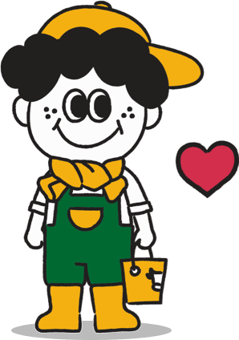

---
# Feel free to add content and custom Front Matter to this file.
# To modify the layout, see https://jekyllrb.com/docs/themes/#overriding-theme-defaults

layout: default
title: 뉴소레터
custom_css:
  - newso-story
custom_js:
  - subscribe
---

<section class="newso-story">
  <div class="content-wrraper">
    <div class="story-container flex-space-between flex">
      <div class="story-title">
        <p>뉴소레터의</p>
        <p>시작</p>
      </div>
      <div class="story-content flex-col">
        <div class="story-subtitle">뉴소레터는요</div>
        <div class="story-line"></div>
        <div class="story-content-text">
          <p>
            뉴소레터는 축산업, 특히 한우 산업에 종사하는 사람들에게 필요한
            정보들을 선별하여 쉽고, 재미있게 전달하기 위해 만들기 시작했어요.
          </p>
          <br />
          <p>
            우리 모두들 하루 종일 보는 정보가 너무 많잖아요. 필요한 정보들을
            찾기 위해서는 불필요한 정보들까지 다 보아야 하고... 그러다 보면
            혼란스러울 때도 있고, 시간도 너무 많이 들고요. 마치 엄청 많은 시험
            범위를 보기 편하게 요약 해 놓은 핵심 노트처럼 좋은 정보를 많은
            사람들이 편하고 쉽게 봤으면 좋겠어요.
          </p>
          <br />
          <p>
            손으로 일하지 않는 네가 머릿속에 쌓고 있는 세상은 얼마나 허술한
            것이냐고 한뜸 한뜸 손으로 쌓아가지 않는 어떤 높은 물질이 있느냐고
            (송경동, 목수일 하면서는 즐거웠다) 이 업을 위해 노력하시는 모든
            분들께 존경과 응원을 담아, 매주 목요일 아주 좋은 것들을 보냅니다.
            행복해요 우리❤️
          </p>
        </div>
      </div>
    </div>

    <div class="story-container flex-space-between flex">
      <div class="stroy-jonnie-container flex-col flex-space-between">
        <div class="story-title">
          <p>뉴소레터의</p>
          <p>쪼니소개</p>
        </div>
        <div class="story-jonnie-img">
          
        </div>
      </div>
      <div class="flex-col">
        <div class="story-content story-content-first flex-col">
          <div class="story-subtitle">쪼니는요</div>
          <div class="story-line"></div>
          <div class="story-content-text">
            대학교에서 축산학을 전공했어요. 쪼니는 우리에게 소중한 음식을 제공해
            주는 축산업을 정말 사랑한답니다. 그리고 세상에도 관심이 많아요.
            1차산업인 축산업도 발빠르게 변화하는 시대에 적응하고 있는데요, 그
            경계에서 쪼니는 축산업과 세상을 조금 더 매끄럽게 이어주는 역할이
            되고 싶어요. 그래서 소를 키우게 됐고, 농민들과 소통하며 지내고
            싶어요.
          </div>
        </div>

        <div class="story-content flex-col">
          <div class="story-subtitle">왜 이름이 쪼니예요?</div>
          <div class="story-line"></div>
          <div class="story-content-text">
            ‘Deere and company’ 라는 농기계 회사를 아시나요? 조금 과장을 보태서
            모든 농부들의 꿈의 트랙터를 파는 회사이죠. 쪼니도 언젠가 농장 규모가
            커지면, 존 디어 트랙터를 타고 초지를 달리며 직접 파종하고, 경운하고,
            나중에 소들에게 맛있는 풀을 먹이는 상상을 한답니다. 주변 농장에도
            나눠 주고요. 그래서 이름을 이 트랙터의 이름과 비슷하게 Jonnie 로
            지었어요. 구독자님들께도 사랑받는 쪼니(Dear Jonnie)로 다가가고
            싶어요.
          </div>
        </div>
      </div>
    </div>
  </div>
</section>
